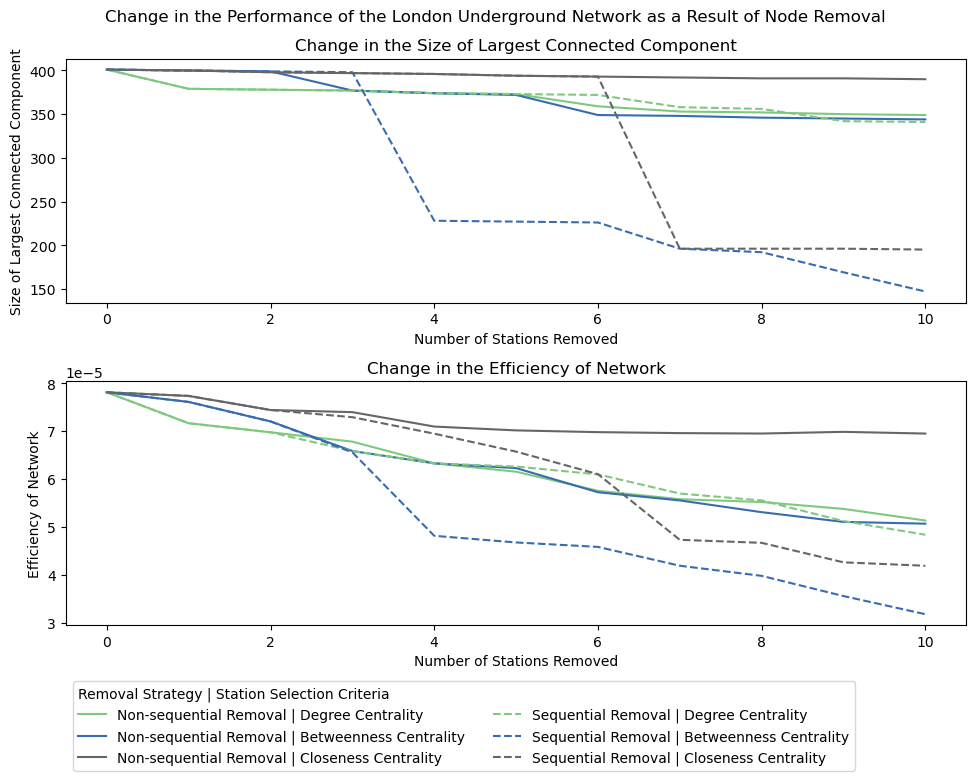

Urban Simulation Report
1 Part 1: London’s Underground Resilience
The first part of this report addresses the resilience of the London Underground using network analysis.
1.1 Topological Network
1.1.1 Centrality Measures
Centrality measures are characteristics of nodes indicating their significance in various aspects. The measures used to identify significant stations in this report are: degree centrality, betweenness centrality, and closeness centrality. The number of nodes are denoted by \(n\), and the number of links between nodes \(i\) and \(j\) as \(A_{ij}\).
Degree centrality is the number of links that are connected to each node. The degree centrality \(k_i\) for node \(i\) is calculated as
\[ k_i = \sum_{j} A_{ij} \tag{1}\]
In the context of the underground network, the degree corresponds to the number of directions that serves the station. Since our dataset does not double count two lines serving the same two station pairs, this is equivalent to the number of adjacent stations.
Table 1 shows stations with the highest degree centrality. A high degree centrality indicates there are many lines serving the station, quantifying the importance as a transit hub allowing for transfers.
| Rank | Station | Degree |
|---|---|---|
| 1 | Stratford | 9 |
| 2 | Bank and Monument | 8 |
| 3 | Baker Street | 7 |
| 3 | King’s Cross St. Pancras | 7 |
| 5 | Earl’s Court | 6 |
| 5 | Canning Town | 6 |
| 5 | Liverpool Street | 6 |
| 5 | Green Park | 6 |
| 5 | Oxford Circus | 6 |
| 5 | Waterloo | 6 |
| 5 | West Ham | 6 |
Betweenness centrality is the number of shortest paths that run through the node or link. The betweenness centrality \(x_i\) for node \(i\) is calculated as
\[ x_i = \sum_{st} \frac{n^i_{st}}{g_{st}} \tag{2}\]
where
\[ n^i_{st} = \begin{cases} 1 \quad (\text{if node } i \text{ is on geodesic from } s \text{ to }t)\\ 0 \quad (\text{otherwise}) \end{cases} \]
and \(g_{st}\) is the total number of geodesic paths from \(s\) to \(t\). This measure can be normalised by dividing by the number of origin-destination combinations between the other \(n-1\) nodes: \((n-1)(n-2)/2\). High betweenness centrality on the underground shows it is on the shortest path between many pairs of stations, therefore many people are expected to pass it. The stations with the highest betweenness centrality are shown in Table 2.
| Rank | Station | Betweenness Centrality |
|---|---|---|
| 1 | Bank and Monument | 17,625 |
| 2 | King’s Cross St. Pancras | 16,716 |
| 3 | Stratford | 14,563 |
| 4 | Baker Street | 13,180 |
| 5 | Oxford Circus | 12,573 |
| 6 | Euston | 12,345 |
| 7 | Earl’s Court | 11,452 |
| 8 | Shadwell | 11,127 |
| 9 | Waterloo | 10,425 |
| 10 | South Kensington | 10,302 |
Closeness centrality is the inverse of \(l_i\): the mean geodesic distance from the node to all other \(n-1\) nodes. The closeness centrality \(C_i\) is calculated as
\[ C_i = \frac{1}{l_i} = \frac{n-1}{\sum_{j} d_{ij}} \tag{3}\]
where \(d_{ij}\) is the geodesic distance between nodes \(i\) and \(j\).
A high closeness centrality indicates the station is within a short distance from all the other stations. These stations are assumed to be located within the city centre, as illustrated by the high-ranked stations in London shown in Table 3. These stations are concentrated in central London, including Charing Cross - where the ‘distance to London’ is measured from (Leatherdale, 2016).
| Rank | Station | Closeness Centrality [\(\times 10^{-5}\)] |
|---|---|---|
| 1 | Holborn | 7.924 |
| 2 | King’s Cross St. Pancras | 7.907 |
| 3 | Tottenham Court Road | 7.888 |
| 4 | Oxford Circus | 7.873 |
| 5 | Leicester Square | 7.835 |
| 6 | Picadilly Circus | 7.831 |
| 7 | Charing Cross | 7.830 |
| 8 | Chancery Lane | 7.823 |
| 9 | Covent Garden | 7.806 |
| 10 | Embankment | 7.799 |
1.1.2 Impact Measures
The delta centrality quantifies the change in performance of the network when a node is removed (Latora and Marchiori, 2007). For a performance measure \(P\) of the network \(G\), the delta centrality \(C^{\Delta}_i\) of node \(i\) is defined as
\[ C^{\Delta}_i = \frac{\Delta P}{P} = \frac{P(G) - P(G')}{P(G)} \]
where \(G'\) denotes the network where node \(i\) is removed. The performance measures considered for calculating \(C^{Delta}_i\) is summarised in Table 4.
| Performance Measure \(P\) | Explanation |
|---|---|
| Size of Largest Connected Component (LCC) | The size of LCC shows the connectivity of the network. A smaller number indicates stations are disattached from the main network, leading to less connectivity. |
| Network Efficiency | Efficiency measure proposed by Latora and Marchiori (2001), calculated as \(E(G) = \frac{1}{n(n-1)}\sum_{i \ne j} \frac{1}{d_{ij}}\). A high value indicates lower shortest path lengths between nodes. This measure is applicable for disconnected networks as well, unlike the average shortest path length. Since the nx.global_efficiency() function cannot incorporate edge length, a custom function was defined to calculate this value. |
These measures can be applied to any transport network. For instance, the impact of closures of stations and lines of the New York City’s subway network after the September 11 attacks (Wyatt, 2002; Paaswell, 2012) is one applicable example outside London. The measures are applicable to any network, as long as the weight of the edges indicate physical or perceptual distance between nodes.
1.1.3 Node Removal
The measures in Table 4 is used to analyse the impact of node removal on the network. Two strategies are used to remove 10 nodes from the network, as summarised in Table 5. The stations removed are shown in Table 6.
| Strategy | Explanation |
|---|---|
| Non-sequential Removal | Removes nodes in order that appears in the original rank table (Table 1, Table 2, and Table 3). |
| Sequential Removal | Recalculates centrality on the deformed network after each node removal, and determines the next node to remove based on the recalculated centrality. |
Table 6: Stations removed for each centrality measure and strategy.
| Non-sequential | Sequential |
|---|---|
| Stratford | Stratford |
| Bank and Monument | Bank and Monument |
| Baker Street | King’s Cross St. Pancras |
| King’s Cross St. Pancras | Baker Street |
| Earl’s Court | Green Park |
| Canning Town | Earl’s Court |
| Liverpool Street | Canning Town |
| Green Park | Oxford Circus |
| Oxford Circus | Willesden Junction |
| Waterloo | Waterloo |
| Non-sequential | Sequential |
|---|---|
| Bank and Monument | Bank and Monument |
| King’s Cross St. Pancras | King’s Cross St. Pancras |
| Stratford | Canada Water |
| Baker Street | West Hampstead |
| Oxford Circus | Earl’s Court |
| Euston | Oxford Circus |
| Earl’s Court | Shepherd’s Bush |
| Shadwell | Bakes Street |
| Waterloo | Acton Town |
| South Kensington | Stratford |
| Non-sequential | Sequential |
|---|---|
| Holborn | Holborn |
| King’s Cross St. Pancras | King’s Cross St. Pancras |
| Tottenham Court Road | Embankment |
| Oxford Circus | Waterloo |
| Leicester Square | London Bridge |
| Picadilly Circus | West Hampstead |
| Charing Cross | Clapham Junction |
| Chancery Lane | Mile End |
| Covent Garden | Stratford |
| Embankment | Notting Hill Gate |
The change in performance measures caused by the node removal is as illustrated in Figure 1, and the stations removed are mapped in Figure 2.


Discussions
Based on the two performance measures, the sequential removal is more effective to study resilience of the network. Since the characteristics of the network change after removing the first nodes, the crucial node may be different when re-evaluated based on the remaining network. The non-sequential removal using closeness centrality illustrates this, where many stations in a small area is removed; the removal of the first few nodes have significantly lowered the importance of this area, and the impact of further removal of stations are minimal. By assessing the importance of node at each step, the sequential removal is capable of identifying the hidden nodes that gain importance when the most obvious nodes have been removed, which may need improvements if we were to prepare for emergency situations.
Comparing between the centrality measures, removal based on the betweenness centrality has the largest impact on performance. Since a high betweenness centrality indicates high number of flows through the node, removing this node will force the flows to divert using different routes, requiring a higher cost to reach the destination. Given that connecting two points is the fundamental function of a transport network, the betweenness centrality directly addresses the importance regarding this aspect. It is worth noting that the degree centrality has identified the first few stations that impact the overall performance, and further investigation is required to identify the cause.
For the comparison of the impact measure, the efficiency appears to be a better evaluation of the performance. The size of LCC is unable to assess the impact of station removal unless it disconnects nodes from the network, whereas the efficiency can assess the change within a connected network, thus the impact is more sensitively reported.
1.2 Flows: Weighted Network
In this section, a weighted network considering the passenger flows is analysed. Based on the Transport for London NUMBAT data (Transport for London, 2021), the morning peak flows have been assigned to the shortest path between nodes considering the length of each edge.
1.2.1 Centrality Measures
First, whether centrality measures in Section 1.1 need adjustments to be applied to the weighted network is discussed.
Although the degree centrality as the number of connected stations is still valid for a weighted network without amendments, a flow-weighted version of degree centrality Equation 1 can be defined as
\[ s_i = \sum_j A_{ij}w_{ij} \quad (w_{ij}: \text{flow on link between nodes } i \text{ and } j) \tag{4}\]
which is a measure discussed as the strength \(s_i\) in Lee et al. (2008). This quantifies the amount of flow that passes through each node, highly related to the weighted betweenness centrality. The stations with the highest weighted degree centrality is shown in Table 7.
| Rank | Station | Weighted Degree (Strength) \((\times 10^5)\) |
|---|---|---|
| 1 | Bank and Monument | 5.188 |
| 2 | Oxford Circus | 4.889 |
| 3 | King’s Cross St. Pancras | 4.671 |
| 4 | Baker Street | 3.358 |
| 5 | Waterloo | 3.344 |
| 6 | Euston | 3.164 |
| 7 | Green Park | 3.143 |
| 8 | Victoria | 2.947 |
| 9 | Liverpool Street | 2.770 |
| 10 | Embankment | 2.539 |
6 out of 10 stations in this table also appear in Table 1, while terminal stations such as Euston and Victoria are original to this list as a result of considering flows.
The betweenness centrality considering flows, given \(T_{ij}\) as the number of flows from node \(i\) to \(j\), can be proposed as follows:
\[ x'_i = \sum_{st} \frac{n^i_{st}}{g_{st}}T_{st} \tag{5}\]
The strength being the sum of flows on links and the weighted beweenness centrality calculating flows that passes through (and considering that these are counted twice in \(s_i\)), these two centrality measures fulfill the relationship
\[ s_i = 2x'_i + (O_i + D_i - T_{ii}) \tag{6}\]
where \(O_i, D_i\) is the number of flows originating and terminating at node \(i\). The stations with the highest values are calculated as shown in Table 8.
| Rank | Station | Weighted Betweenness Centrality \((\times 10^5)\) |
|---|---|---|
| 1 | Oxford Circus | 4.415 |
| 2 | Bank and Monument | 4.104 |
| 3 | King’s Cross St. Pancras | 4.052 |
| 4 | Baker Street | 3.131 |
| 5 | Green Park | 2.852 |
| 6 | Euston | 2.816 |
| 7 | Waterloo | 2.433 |
| 8 | Embankment | 2.393 |
| 9 | Charing Cross | 2.277 |
| 10 | Victoria | 2.236 |
6 out of 10 stations are in the ranking for the unweighted betweenness centrality Table 2. Because of the similarity between the weighted degree centrality, 9 out of 10 stations in Table 8 appear in Table 7 as well.
When considering the closeness centrality with regards to the number of flows, considering \(T_{ij}\) in Equation 3 as \(C'_i = \frac{\sum_j T_{ij}}{\sum_j T_{ij}d_{ij}}\) returns the average distance travelled by the user of the station. This figure is difficult to relate to the importantness, as it may be larger in the city centre attracting people from longer distances, or at the outskirts where passengers need to travel long distances in general. Instead, by defining the social distance of links as the inverse of the flows, and \(u_{ij}\) as the shortest social distance between nodes \(i\) and \(j\) (and considering \(u_{ij}\) diverges to infinity when no flows between stations), the harmonic weighted closeness centrality of the social distance
\[ C''_i = \frac{1}{n-1} \sum_j \frac{1}{u_{ij}} \]
is the weighted equivalent of the closeness centrality. The stations with high values are shown in Table 9.
| Rank | Station | Harmonic Weighted Closeness Centrality |
|---|---|---|
| 1 | Bank and Monument | 68.816 |
| 2 | Liverpool Street | 66.250 |
| 3 | Stratford | 65.282 |
| 4 | Waterloo | 64.690 |
| 5 | Green Park | 63.928 |
| 6 | King’s Cross St. Pancras | 63.876 |
| 7 | Moorgate | 62.571 |
| 8 | Oxford Circus | 61.793 |
| 9 | Westminster | 61.636 |
| 10 | Baker Street | 61.169 |
These stations are not geographically concentrated in the west end compared to Table 3. Terminal stations with high originating or terminating journeys, or stations connected by high-flowing edges are highly ranked in this measure. King’s Cross St. Pancras and Oxford Circus are the only stations that appear in both Table 3 and Table 9.
1.2.2 Impact Measures
We will consider the need for adjusting the impact measures in Table 4 for the weighted network.
The size of LCC is valid in a weighted network, although unable to consider the flows. If the weight of the edges are to be incorporated, the ratio of journeys that can be completed within a connected component \(J(G)\) can be proposed, calculated as:
\[ J(G) = \frac{\sum_{i \ne j} (T_{ij} \delta_{ij})}{T} \quad \left( \delta_{ij} = \begin{cases} 1 \text{ if nodes } i \text{ and } j \text{ are connected} \\ 0 \text{ otherwise} \end{cases} \right) \]
where \(T\) is the total flows. For the network efficiency, each of the distances should be weighted according to the number of passengers who travel between the two nodes. The efficiency should also account for the flows between points. The equation in Table 4 should be adjusted as:
\[ E(G) = \frac{1}{T} \sum_{i \ne j} \frac{T_{ij}}{d_{ij}} \]
1.2.3 Node Removal
The best performing methodology in Section 1.2 is the sequential removal using betweenness centrality. Using the unweighted and weighted betweenness centrality, the sequential removal of the highest centrality removes the stations shown in Table 10.
| Rank | Unweighted | Weighted |
|---|---|---|
| 1 | Bank and Monument | Oxford Circus |
| 2 | King’s Cross St. Pancras | King’s Cross St. Pancras |
| 3 | Canada Water | Bank and Monument |
The changes in the performance using \(J(G), E(G)\) for each strategy are shown in Figure 3. Comparing these results, removing stations based on the unweighted betweenness centrality measure has the most impact on the network. The weighted efficiency of the network has dropped significantly, indicating journeys are taking longer or impossible to complete with the nodes-removed network. Thus, the stations that have the most impact on the performance of the network are: Bank and Monument, King’s Cross St. Pancras, and Stratford.
The weighted strategy takes into account the flows of passengers, but did not outperform the unweighted strategy. One possible explanation is that the stations removed by the weighted strategy are located near the centre of the city and has alternatives that could operate without distorting the efficiency of the network, while unweighted strategy removes the suburban transit hub of Stratford that immediately disconnects branches from the largest component, having a high impact on the performance measures. A further investigation of comparison is necessary to further compare these strategies; one potential methodology is to continue removing more stations following each strategy.
2 Part 2: Spatial Interaction Models
In the second part, we have analysed the morning-peak passenger flows of the London Underground, following a brief introduction of the spatial interaction model.
2.1 Models and Calibration
2.1.1 Family of Spatial Interaction Models
The spatial interaction model is a methodology that predicts the flow between origin and destination from the amount of activity at both ends and the distance between them, drawing an analogy from Newton’s law of gravity (Waddell, 2002). Spatial interaction models are classified by the constraints cast on them deriving from actual observations; whether the amount of originating and terminating journeys of nodes are preserved.
The variables will be denoted as follows:
- \(T_{ij}\): estimated flow from station \(i\) to \(j\)
- \(T\): total flow within a network, thus \(T = \sum_{i,j} T_{ij}\)
- \(d_{ij}\): distance between stations \(i\) and \(j\) - the cost function is a function of \(d_{ij}\) hence denoted as \(f(d_{ij})\)
- \(O_i\), \(D_j\): activity at the origin and destination that impacts the originating and terminating flows
The \(O_i\) and \(D_j\) show the amount of activity that influence the number of journeys that originate and terminate at the node, respectively. In this model, the values themselves are the number of total journeys from / to the node. As the interpretation of the variables considering we are analysing the data for the morning peak, \(O_i\) corresponds to the population that uses the station and \(D_j\) to the number of jobs.
The unconstrained model only constrains the model with matching the total flows with the observed value, calculated as:
\[ T_{ij} = K O^{\alpha}_i D^{\gamma}_j f(c_{ij}) \quad \left (K = \frac{T}{\sum_i \sum_j O^{\alpha}_i D^{\gamma}_j f(d_{ij})} \right) \tag{7}\]
K is determined so that the total flow \(T\) is preserved. This is used when there is information on the total amount of journeys but no detailed information is available.
The singly constrained model constrains the total number of observations for each component at the origin or the destination. The origin constrained model, shown in Equation 8, fixes the total number of journeys at the origin.
\[ T_{ij} = A_i O_i D^{\gamma}_j f(d_{ij}) \tag{8}\]
The parameter \(A_i\) is determined so that the total at the origin is constrained.
\[ \sum_j T_{ij} = O_i \therefore A_i = \frac{1}{\sum_j D^{\gamma}_j f(d_{ij})} \tag{9}\]
This is a widely used model for spatial interaction in various use-cases, including deciding the location and size for retail developments based on the residential distribution within a certain area (Haynes and Fotheringham, 2020).
Similarly, the destination constrained model constrains the total at the destination, calculated by Equation 10.
\[ T_{ij} = O^{\alpha}_i B_j D_j f(c_{ij}) \quad \text{where } \left (B_j = \frac{1}{\sum_i O^{\alpha}_i f(c_{ij})} \right) \tag{10}\]
This can be used for predicting flows from origins given a particular destination, such as estimating the impact of a new development within a city (Haynes and Fotheringham, 2020).
The doubly constrained model constrains both the total at the origin and destination.
\[ T_{ij} = A_i O_i B_j D_j \exp(-\beta d_{ij}) \tag{11}\]
This is used in the transport planning context, in the trip distribution process in the 4-step method of transportation prediction where origins and destinations are decided based on activity of both ends (Robinson, 2011).
In this report, we will use the Poisson model (Flowerdew and Aitkin, 1982) to fit this gravity model.
2.1.2 Calibration of Parameters
In this report, an origin-constrained model is used to simulate the different scenarios. This is justified in Section 2.2. The dataset used for analysis have the following data for every London Underground Station.
- population of origin
- jobs at the destination
- distance between origin and destination
- flow from the origin to the destination
For the calibration process, we will first use the doubly constrained model to estimate the best cost function and parameters by comparing with the observed flow. Then, the origin-constrained model required for the scenarios are used to calibrate the \(\gamma\) parameter. For the cost function, constraining both the total journeys for both the origin and destination will enable the full utilisation of observed data, enabling the most accurate calibration. The \(\gamma\) parameter does not appear in the doubly constrained model, and is required to calibrate in the origin-constrained model.
Calibration of the cost function
The Poisson model of the doubly constrained model Equation 11 is written as:
\[ \ln(T_{ij}) = \ln A_i + \ln O_i + \ln B_j + \ln D_j + \ln f(d_{ij}) \\ \]
We will compare the negative exponential and inverse power relationships as the cost function \(f(d_{ij})\).
\[ f(d_{ij}) = \begin{cases} \exp(-\beta d_{ij}) \text{ (Negative Exponential)} \\ d^{-\beta}_{ij} \text{ (Inverse Power)} \end{cases} \]
For each cost function, we have run the Poisson Regression to calculate the optimal \(\beta\).
| Cost Function | Parameter \(\beta\) | \(R^2\) value |
|---|---|---|
| Negative exponential \(f(d_{ij}) = \exp(-\beta d_{ij})\) | \(\beta = 1.543 \times 10^{-4}\) | \(R^2 = 0.4979\) |
| Inverse Power \(f(d_{ij}) = d^{-\beta}_{ij}\) | \(\beta = 9.096 \times 10^{-1}\) | \(R^2 = 0.4077\) |
From these results, we have seen the negative exponential model (Equation 12) for the cost function has a better fit to the observed flows.
\[ f(d_{ij}) = \exp(-\beta d_{ij}) \quad (\beta = -1.543 \times 10^{-4}) \tag{12}\]
Calibration of \(\gamma\)
Since the origin-constrained model was used for the analysis of the scenarios, the gamma variable introduced in Equation 8 must be calibrated before applying to the new scenarios. Equation 8 can be transformed into a Poisson Model as follows:
\[ \ln(T_{ij}) = \ln A_i + \ln O_i + \gamma \ln D_j + \ln f(d_{ij}) \\ \tag{13}\]
\(\gamma\) with the highest R-squared value for estimating the original flow was used, resulting as follows:
\[ \gamma = 7.556 \times 10^{-1} \quad (R^2 = 0.4680) \tag{14}\]
2.2 Scenarios
The scenarios we have considered are summarised in Table 11.
| Scenario | Explanation |
|---|---|
| Scenario A | Jobs at Canary Wharf decrease by 50 % |
| Scenario B | Increase in cost of transport - considering 2 parameters |
Since scenario A involves the change in the characteristics of the destination, the origin constrained model is used for the analysis to preserve the number of commuters starting their journeys in each area. The same model was used for scenario B and the original state for a fair comparison between scenarios.
2.2.1 Scenario A
We have first decreased the number of jobs at Canary Wharf by 50%, from the original 58,772 to 29,386. We have observed how the destination of commuters changed in reaction to this decrease using the origin-constrained model (Equation 13). First, we reduced the number of jobs at Canary Wharf from \(D_j\) to \(D'_j\) by 50 %, thus
\[ D'_j = \frac{D_j}{2} \]
Using Equation 9, \(A_i\) needs to be adjusted, thus the new parameter \(A'_i\) fulfilling Equation 15. This ensures the total number of flows that originate from each station is conserved.
\[ A'_i = \frac{1}{\sum_j D'^{\gamma}_j f(d_{ij})} \tag{15}\]
Finally, the new flows \(T'_{ij}\) can be calculated using the relationship shown below, derived from Equation 8.
\[ T'_{ij} = A'_i O_i D'^{\gamma}_j \exp(-\beta d_{ij}) \]
A significant drop in the number of journeys terminating at Canary Wharf was observed, from 47,690 in the original simulation to 29,496 (61.9 % of original flow) in scenario A. As observable from Figure 4, the decrease in the flows to Canary Wharf occured evenly among all origins, and been redistributed into other destinations.
2.2.2 Scenario B
2 scenarios for the change in the cost were considered. The parameters \(\beta_1, \beta_2\) for the two scenarios B1 and B2 were modified as shown in Equation 16 and illstrated in Figure 5.
\[ \begin{cases} \beta_1 = 2 \beta \\ \beta_2 = 10 \beta \end{cases} \quad (\beta = -1.543 \times 10^{-4}) \tag{16}\]

The new flows for this scenario was calcuated, following the same parameter-recalibration process in scenario A. The flows between origin-destination pairs plotted by distance of journeys, are shown in Figure 6. As the \(\beta\) increases, the longer distance journeys are disencouraged, and the distribution of the distance of journeys become negatively skewed.

2.2.3 Discussion
In order to examine the changes that occured and compare the impact of different scenarios, measurements in Table 12 were calculated.
| Measurement | Explanation |
|---|---|
| Quantity of change in destination \(T_{\text{diff}} = \frac{\sum_{i,j} |T'_{ij} - T_{ij}|}{2}\) | The number of flows that have different destination compared to the original scenario. A larger number of change in destination indicate larger impact on the movement of people within the underground network. |
| Mean distance of journeys \(\bar{\delta} = \frac{\sum_{i,j}\left(T_{ij}d_{ij}\right)}{T}\) | The mean distance of all journeys simulated in each scenario. A larger change in the distance compared to the original simulation indicate larger impact. |
For each scenario, values for these measurements are calculated as shown in Table 13.
| Scenario | \(T_{\text{diff}}\) | \(\bar{\delta}\) [m] | |
|---|---|---|---|
| Original Simulation | Total flows: 1,542,283 | 8,583 | |
| Scenario A | 18,193 | (1.2 % of total flows) | 8,579 |
| Scenario B1 | 346,503 | (22.47 % of total flows) | 6,030 |
| Scenario B2 | 1,222,191 | (79.25 % of total flows) | 1,613 |
The number of destinations changed and the change in the mean distance both indicate that scenario B2 had the largest impact on the number of flows, and scenario A being the least impactful.
The intervention to the travel cost (scenario B) directly impacts all OD pairs, while the reduction of jobs in one area (scenario A) only impacts journeys that end at the station affected. This different nature of the interventions dictate the magnitude of change it causes; thus scenario B has a larger impact on the flows on the network as a whole. Recalling the impact of scenario A on Canary Wharf was a 39 % decrease in the total inflows, this figure falls between scenarios B1 and B2 in terms of \(T_{\text{diff}}\). Since \(\bar{\delta}\) remains unchanged the impact on Canary Wharf is difficult to compare between scenarios A and B1, but we can conclude scenario B2 has the largest impact even if the focus is on Canary Wharf.
To conclude, a drastic impact on the cost function has more impact throughout the network compared to a large change in the demand in a particular area. Impact of the actual changes in the underground fares that occured should be investigated to compare with the results of our model.
Word count: x words
GitHub repository (as hyperlink): Urban_Simulation_Report